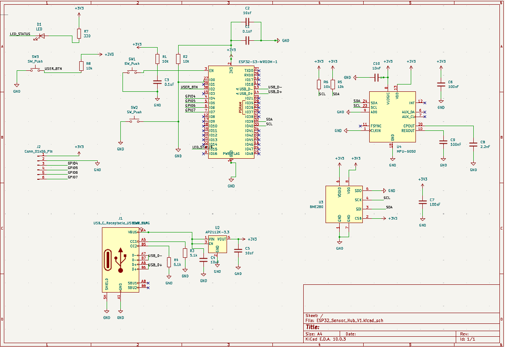
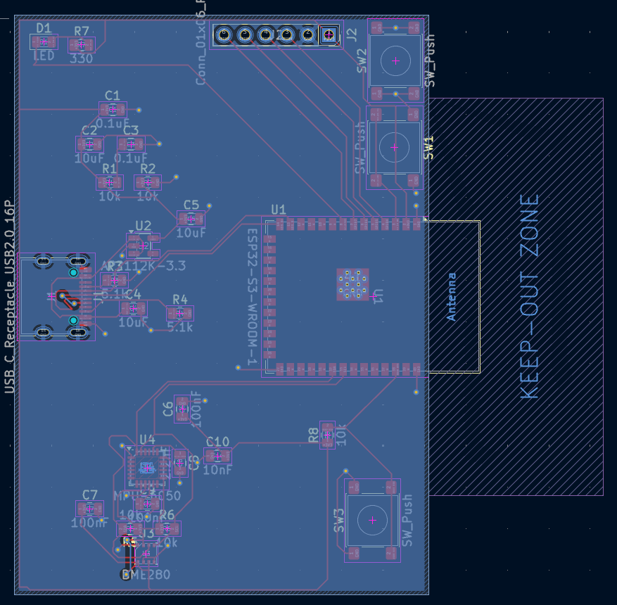
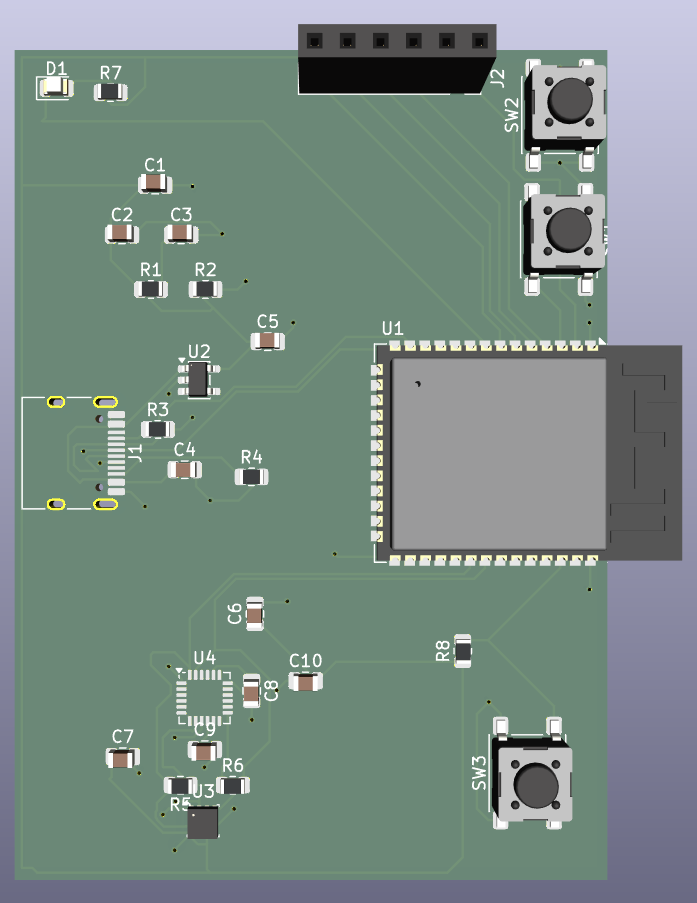
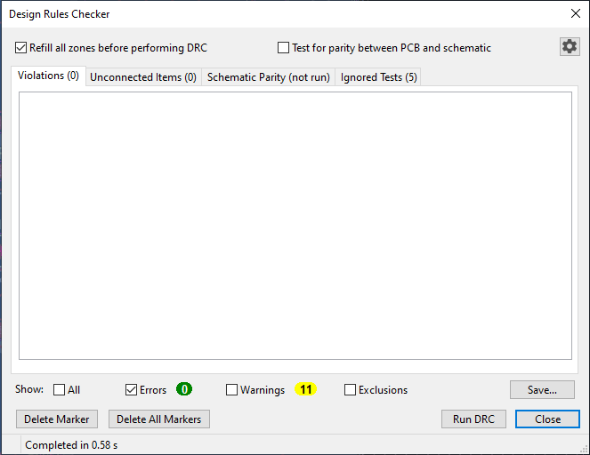

Project Overview
CompletedDesigned a compact 2-layer development platform centered around an ESP32-S3 microcontroller. The board integrates environmental sensing (BME280), motion tracking (MPU-6050), regulated 3.3V power, USB-C communication, user controls, and an expansion header for general I/O.
Design & Manufacturing Views

1. Full System Schematic in KiCad

2. Two-Layer PCB Layout & Traces

3. 3D Render View

4. KiCad DRC Passing 0 Errors

5. Physical Assembled PCB (Awaiting Delivery)
Hardware Architecture
- Microcontroller & Power: Powered via USB-C feeding an AP2112K-3.3 linear regulator to drive the ESP32-S3 module and onboard sensors cleanly.
- Sensor Bus: Shared I²C lines (SDA/SCL) routing to both the BME280 (temperature/humidity/pressure) and MPU-6050 (accelerometer/gyroscope).
- User Controls & I/O: Dedicated Reset button, programmable user button, status LED, and broken-out GPIO header pins.
Key Layout Concepts & Real Design Lessons
- Schematic vs. Physical Layout: Moving past basic logic connections meant actually dealing with component spacing, physical pin clearances, and trace routing on a compact board.
- Ground Plane Strategy: Instead of manually routing individual ground traces, I assigned a continuous copper pour on the bottom layer (
B.Cu) and dropped vias down from top-layer GND pads. This simplified the board and improved ground continuity. - Strategic Use of Vias: When 3.3V lines around the BME280 got crowded by adjacent pads, I used top-to-bottom via transitions (
F.Cu → via → B.Cu → via → F.Cu) to route underneath clogged areas rather than forcing tight traces on one layer. - DRC as an Engineering Check: I initially thought "no ratsnest" meant I was finished, but running KiCad's Design Rules Checker caught actual fabrication issues like hole size constraints (0.2mm actual vs. 0.3mm rule limits). Interpreting these errors helped me align the design with real manufacturer specs (JLCPCB) rather than guessing.
- Troubleshooting Over Restarting: When power routing got messy or DRC threw violations, I focused on incremental fixes—adding missing bypass caps, dropping vias, and adjusting clearances rather than wiping the board to start from scratch.